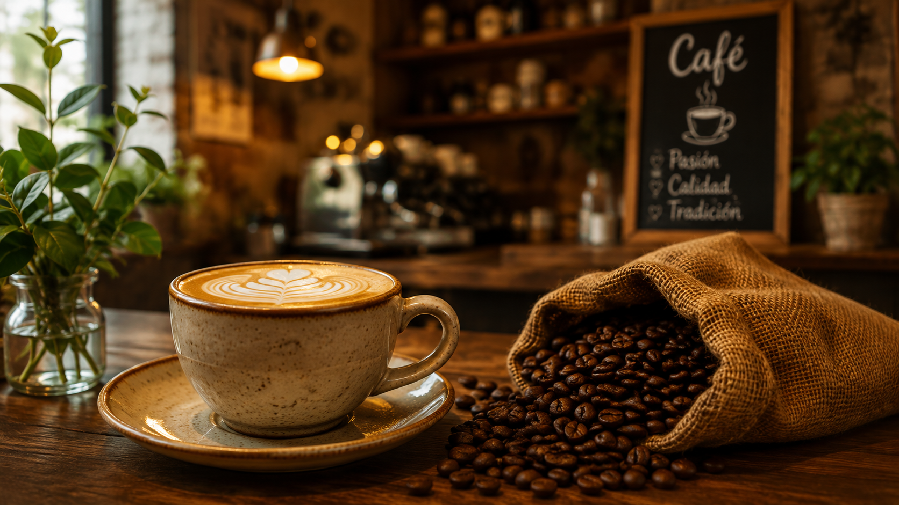
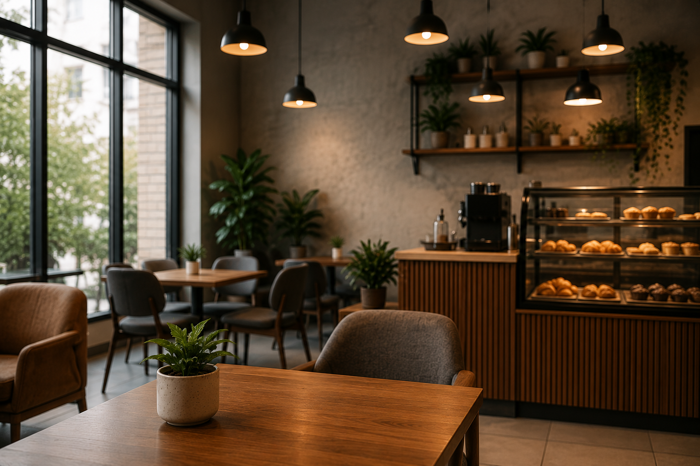
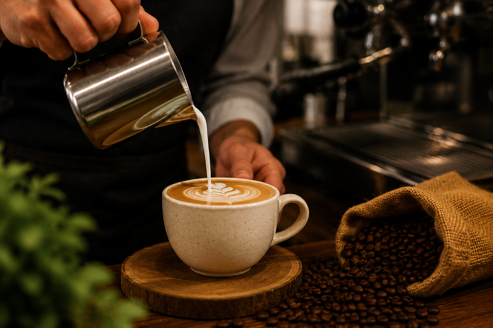

Estación Café nació con la idea de crear un espacio donde el buen café se combine con un ambiente acogedor y cercano. Desde nuestros inicios, nos hemos dedicado a seleccionar los mejores granos y a preparar cada bebida con dedicación, buscando que cada visita se sienta como una pausa reconfortante en el día de nuestros clientes.
Con el paso del tiempo, hemos crecido gracias a la confianza de quienes nos visitan, manteniendo siempre la misma pasión por el buen servicio y la calidad que nos caracteriza desde el primer día.

Ofrecer experiencias memorables a través de café de calidad y un servicio cálido, creando un espacio donde nuestros clientes se sientan siempre bienvenidos.

Ser reconocidos como la cafetería de preferencia en la comunidad, destacando por nuestra calidez, calidad e innovación constante.